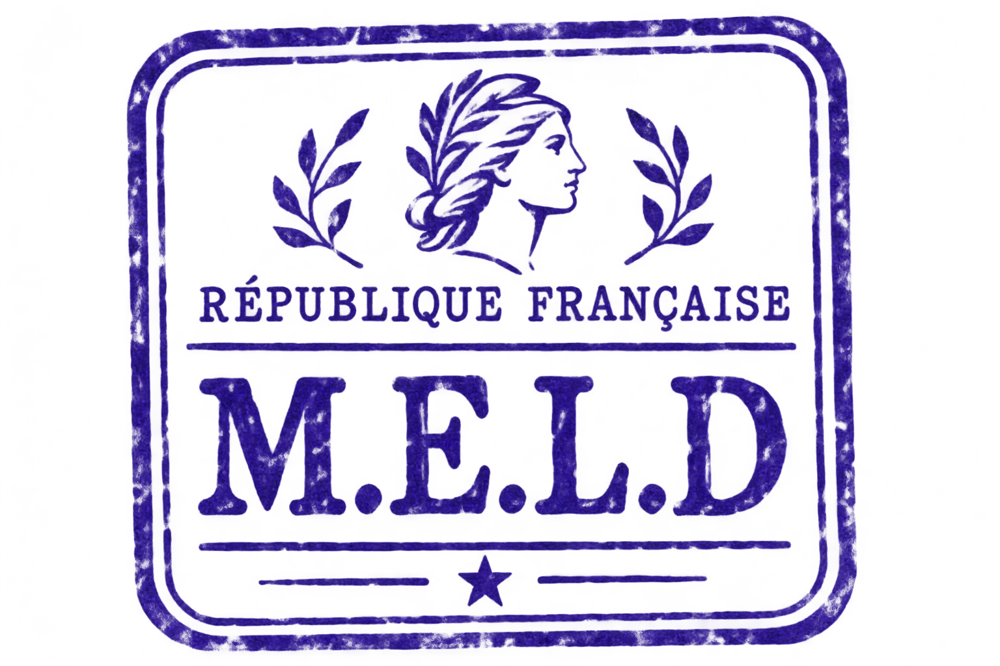
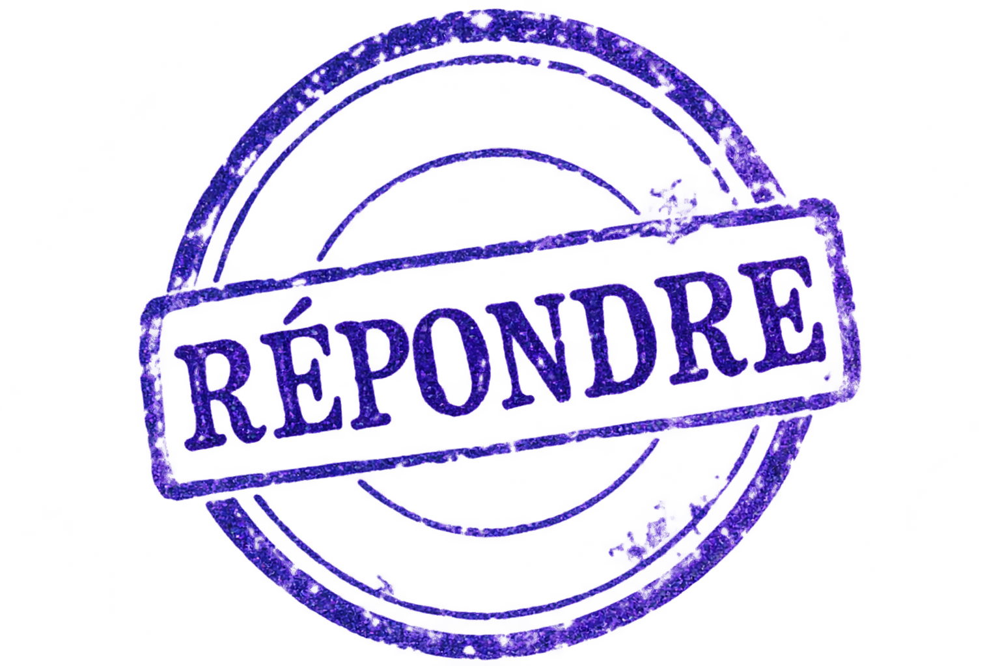

Affaires culturelles
Service de documentation
Référence : B.I. / SANS NUMÉRO
Diffusion : intérieure, sauf erreur
Le Bureau des Interstices
Service des phénomènes insuffisamment documentés

« L'existence de ce service ne constitue pas une reconnaissance officielle des phénomènes dont il s'occupe. »
01 / Objet du service
Paris, août 1966. Dans une France où l'on sait classer les personnes, les bâtiments et les formulaires, certains événements persistent à ne figurer dans aucune rubrique.
Un bruit entendu dans une pièce vide. Un témoignage parfaitement crédible auquel manque une explication. Un dossier dont l'administration assure qu'il n'a jamais existé — mais qu'il faut pourtant restituer avant jeudi.
Le Bureau des Interstices enquête sur ces faits. Ses agents prennent des notes, croisent les témoignages, demandent des autorisations et boivent du café. Les phénomènes, eux, n'ont pas reçu la circulaire.
Document audiovisuel n° 001 — Diffusion autorisée
Archive audiovisuelle publiée par l'INA.
Voir la vidéo sur la chaîne INA Politique ↗
BUREAU DES INTERSTICES
SERVICE DES ARCHIVES
NOTE MANUSCRITE
6 décembre 1963 — Allocution de M. Alain Peyrefitte, ministre de l'Information.
Le ministre annonce une amélioration de la diffusion des images sur le territoire national.
Cette initiative mérite d'être saluée.
Il serait toutefois souhaitable de vérifier que les images reçues correspondent bien à celles qui ont été émises.
La vidéo est une archive historique. La note de Charles Pinson appartient à l'univers fictionnel du Bureau des Interstices.
02 / Consulter les archives
03 / Extrait du registre du personnel
Observation administrative
Les agents ne sont pas tenus de partager les mêmes explications. Ils sont néanmoins priés de partager les mêmes dossiers.

04 / Affaires signalées
État des dossiers
Les enquêtes sont ouvertes lorsque les circonstances l'exigent. Les conclusions, lorsqu'elles existent, ne répondent pas toujours aux questions initiales.
Une affaire peut être classée sans être résolue. Cette distinction est importante pour les statistiques.

05 / Conditions générales d'observation
La guerre froide, les postes de radio, les machines à écrire, les dossiers cartonnés et les voitures qui fument au démarrage. Un Paris d'avant les téléphones portables, où disparaître pendant quelques heures reste techniquement possible.
L'étrange est rare, sans intention morale connue. Ni magie omniprésente ni guerre du Bien contre le Mal. Plutôt un monde familier qui, certains jours, oublie une règle élémentaire de son fonctionnement.
06 / Modalités de participation
Le Bureau des Interstices est un univers d'enquêtes pour M.I.S.E., un jeu de rôle sans dés fondé sur l'initiative des personnages et leurs choix. Les joueurs explorent librement les situations ; le Narrateur ne connaît pas nécessairement l'issue.
Consulter les règles M.I.S.E. ↗07 / Document joint
NOTE INTERNE — À NE PAS REPRODUIRE
Si un visiteur affirme avoir déjà consulté ce document, le prier de fournir une attestation du précédent visiteur.
Si les deux personnes sont identiques, transmettre le dossier à la direction. Sans urgence apparente.